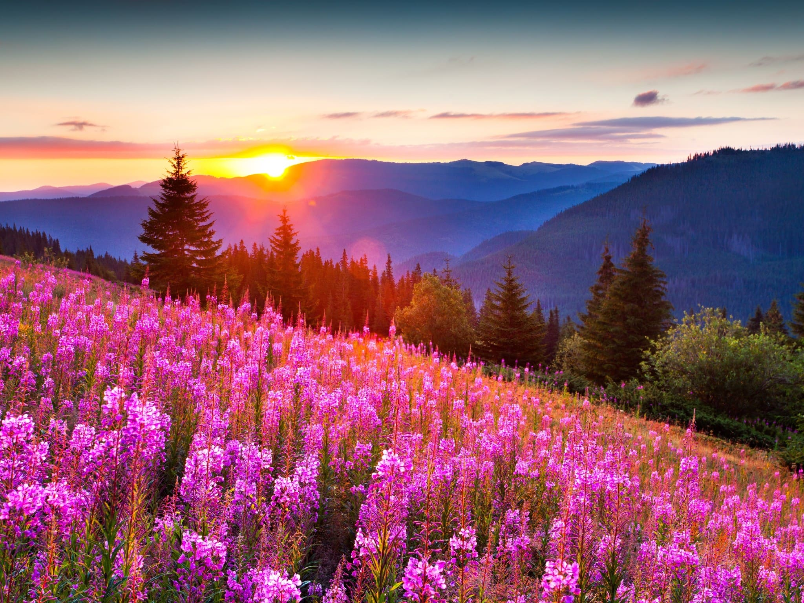

 В древности люди объясняли перемену сезонов года с помощью мифологии. Лишь в эпоху Возрождения было доказано, что планета имеет форму шара, вращается вокруг Солнца. Зима и лето сменяются из-за того, что планета прогревается неравномерно. Поскольку угол наклона оси по отношению к Солнцу составляет 23°, на одно полушарие солнечные лучи попадают под прямым углом, а на второе — под острым. Во время оборота лучше освещается то один участок, то другой из-за перемены положения относительно Солнца. Одно полушарие получает большую часть тепла. Там наступают летние дни. При этом на противоположное приходят зимние холода.
Зимой световые дни укорачиваются, температура снижается. Количество осадков может увеличиться. В большей части регионов России выпадает снег, наблюдается отрицательная температура. В районах с более мягким климатом похолодание не такое сильное, возможны затяжные дожди, ливни.Летом длина светового дня наибольшая. Увеличивается и температура воздуха. В расположенных неподалеку от полюсов областях темные ночи могут совсем отсутствовать. Там светло круглые сутки. Снег летом идет лишь на приближенных к полюсам территориях. На южном полушарии летом теплее, поскольку планета в этот период приближается к Солнцу.
Началом астрономических времен года считают дни, в которые центр Солнца проходит через точки солнцестояний либо равноденствий. Всего их 4, как и календарных сезона.Астрономическое лето длится от летнего солнцестояния (21 июня) до осеннего равноденствия (23 сентября). Оно занимает 93 дня 14 часов и 24 минуты. Затем наступает осень, продолжающаяся до 22 декабря — даты зимнего солнцестояния. Длится она 89 дней 18 часов и 42 минуты.После следует длящаяся до весеннего равноденствия (21 марта) зима. Длина этого сезона равняется 89 дням и 30 минутам.Весна завершается днем солнцестояния летом. Продолжительность ее равна 92 дням 20 часам и 12 минутам.
Началом астрономических времен года считают дни, в которые центр Солнца проходит через точки солнцестояний либо равноденствий. Всего их 4, как и календарных сезона. Астрономическое лето длится от летнего солнцестояния (21 июня) до осеннего равноденствия (23 сентября). Оно занимает 93 дня 14 часов и 24 минуты.Затем наступает осень, продолжающаяся до 22 декабря — даты зимнего солнцестояния. Длится она 89 дней 18 часов и 42 минуты. После следует длящаяся до весеннего равноденствия (21 марта) зима. Длина этого сезона равняется 89 дням и 30 минутам. Весна завершается днем солнцестояния летом. Продолжительность ее равна 92 дням 20 часам и 12 минутам.
| Зима | Осень | Лето | Весна |
|
|
|
|
| Холодные месяца | Тёплые месяца | ||